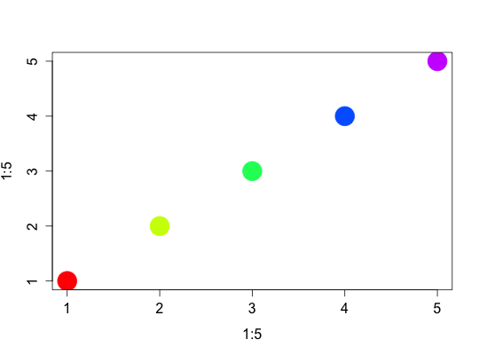

Translating between qplot and base graphics
Description
There are two types of graphics functions in base graphics, those that draw complete graphics and those that add to existing graphics.
Details
qplot() has been designed to mimic plot(), and can do the job of all other high-level plotting commands. There are only two graph types from base graphics that cannot be replicated with ggplot2: filled.contour() and persp()
Examples
# High-level plotting commands x <- runif(10) y <- 1:10 plot(x, y); dotchart(x, y)
qplot(x, y)
plot(x, y, type = "l")qplot(x, y, geom = "line")plot(x, y, type = "s")qplot(x, y, geom = "step")plot(x, y, type = "b")qplot(x, y, geom = c("point", "line"))boxplot(x, y)qplot(x, y, geom = "boxplot")hist(x)
qplot(x, geom = "histogram")`stat_bin()` using `bins = 30`. Pick better value with `binwidth`.# cdplot(factor(x), y) # qplot(x, fill = y, geom = "density", position = "fill") # coplot(y ~ x | a + b) # qplot(x, y, facets = a ~ b) # Many of the geoms are parameterised differently than base graphics. For # example, hist() is parameterised in terms of the number of bins, while # geom_histogram() is parameterised in terms of the width of each bin. hist(x, bins = 10)Warning message: "bins" is not a graphical parameter Warning message: "bins" is not a graphical parameter Warning message: "bins" is not a graphical parameter Warning message: "bins" is not a graphical parameter
qplot(x, geom = "histogram", binwidth = .1)# qplot() often requires data in a slightly different format to the base # graphics functions. For example, the bar geom works with untabulated data, # not tabulated data like barplot(); the tile and contour geoms expect data # in a data frame, not a matrix like image() and contour(). barplot(table(x))qplot(x, geom = "bar")
barplot(x)qplot(seq_along(x), x, geom = "bar", stat = "identity")Warning message: `stat` is deprecated Error: stat_count() must not be used with a y aesthetic.# image(x) # qplot(X1, X2, data = melt(x), geom = "tile", fill = value) # contour(x) # qplot(X1, X2, data = melt(x), geom = "contour", fill = value) # Generally, the base graphics functions work with individual vectors, not # data frames like ggplot2. qplot() will try to construct a data frame if one # is not specified, but it is not always possible. If you get strange errors, # you may need to create the data frame yourself. df <- data.frame(x = x, y = y) with(df, plot(x, y))
qplot(x, y, data = df)
# By default, qplot() maps values to aesthetics with a scale. To override # this behaviour and set aesthetics, overriding the defaults, you need to use I(). plot(x, y, col = "red", cex = 1)qplot(x, y, colour = I("red"), size = I(1))# Low-level drawing # The low-level drawing functions which add to an existing plot are equivalent # to adding a new layer in ggplot2. # Base function ggplot2 layer # curve() geom_curve() # hline() geom_hline() # lines() geom_line() # points() geom_point() # polygon() geom_polygon() # rect() geom_rect() # rug() geom_rug() # segments() geom_segment() # text() geom_text() # vline() geom_vline() # abline(lm(y ~ x)) geom_smooth(method = "lm") # lines(density(x)) geom_density() # lines(loess(x, y)) geom_smooth() plot(x, y)lines(x, y)qplot(x, y) + geom_line()
# Or, building up piece-meal qplot(x, y)
last_plot() + geom_line()
# Legends, axes and grid lines # In ggplot2, the appearance of legends and axes is controlled by the scales. # Axes are produced by the x and y scales, while all other scales produce legends. # See ?theme for help changing the appearance of axes and legends. # The appearance of grid lines is controlled by the grid.major and grid.minor # theme options, and their position by the breaks of the x and y scales. # Colour palettes # Instead of global colour palettes, ggplot2 has scales for individual plots. Much # of the time you can rely on the default colour scale (which has somewhat better # perceptual properties), but if you want to reuse an existing colour palette, you # can use scale_colour_manual(). You will need to make sure that the colour # is a factor for this to work. palette(rainbow(5)) plot(1:5, 1:5, col = 1:5, pch = 19, cex = 4)
qplot(1:5, 1:5, col = factor(1:5), size = I(4))last_plot() + scale_colour_manual(values = rainbow(5))# In ggplot2, you can also use palettes with continuous values, # with intermediate values being linearly interpolated. qplot(0:100, 0:100, col = 0:100, size = I(4)) + scale_colour_gradientn(colours = rainbow(7))last_plot() + scale_colour_gradientn(colours = terrain.colors(7))Scale for 'colour' is already present. Adding another scale for 'colour', which will replace the existing scale.# Graphical parameters # The majority of par settings have some analogue within the theme system, or # in the defaults of the geoms and scales. The appearance plot border drawn # by box() can be controlled in a similar way by the panel.background and # plot.background theme elements. Instead of using title(), the plot title is # set with the title option. See ?theme for more theme elements. last_plot() + labs(title = "My Plot Title")